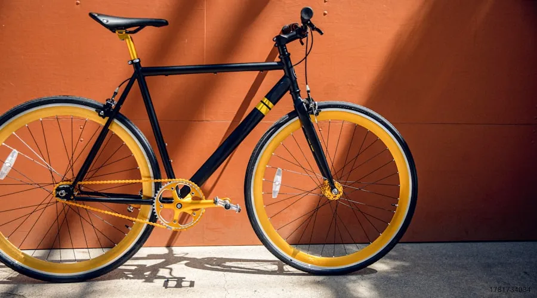

You have a new mountain bike, a helmet that still has the tags on it, and no idea where to ride. The biggest mistake new riders make is choosing trails that are too difficult—leading to crashes, frustration, and expensive bikes gathering dust in the garage. The right beginner trail is smooth, well-marked, has minimal exposure, and most importantly, is fun. This article profiles 12 of the best beginner mountain bike trails across North America, selected for progression-friendly terrain, scenic beauty, and accessibility.
Western United States
1. Betasso Preserve Loop — Boulder, Colorado
Distance: 3.2 miles | Elevation Gain: 400 ft | Rating: Green
This is my top recommendation for any new rider in Colorado. The trail is a one-way loop (direction alternates by day), smooth, wide enough to feel safe, and has just enough gentle climbing and descending to feel like real mountain biking. The views of the Continental Divide are spectacular. The trail is maintained by Boulder County Open Space and is free to ride. Note: bikes are prohibited on Wednesdays and Saturdays.
2. Phil's World — Cortez, Colorado
Distance: 16 miles (full system) | Elevation Gain: 800 ft | Rating: Green/Blue
Phil's World is famous for its "Rib Cage" section—a series of rolling whoops that feel like a roller coaster. The main loop (Stinky's Loop) is smooth, flowy, and almost entirely rideable for beginners. The trail surface is hardpack with minimal rocks, and the desert scenery is stunning. The entire system is directional and well-marked. A $5 day-use fee applies.
3. Bangtail Divide — Bozeman, Montana
Distance: 24 miles (shuttle-able) | Elevation Gain: 2,000 ft | Rating: Blue
This is a "blue" trail that is accessible to motivated beginners, especially if you shuttle the climb. The singletrack winds through alpine meadows with wildflowers in July and August, and the descents are smooth, fast, and non-technical. The views of the Bridger Range are world-class. If you are new to mountain biking but fit from other sports, this is a bucket-list ride that will not overwhelm you.
4. Browns Ranch — Scottsdale, Arizona
Distance: 15+ miles (network) | Elevation Gain: 500 ft | Rating: Green/Blue
The McDowell Sonoran Preserve's Browns Ranch trail network is a beginner's paradise from October through April. The trails are smooth, the grades are gentle, and the saguaro cactus scenery is unlike anywhere else on Earth. The Hawknest and Cholla Mountain loops are ideal first rides. Avoid from May through September—temperatures regularly exceed 100°F.
Midwest and Central
5. Copper Harbor Trails — Copper Harbor, Michigan
Distance: 35+ miles (network) | Elevation Gain: Varies | Rating: Green/Blue/Black
Copper Harbor is one of the best-kept secrets in American mountain biking. The "Flow" trail (green) is a purpose-built beginner trail that winds through the forest with perfect berms and rollers. The trail system is IMBA Epic-rated and maintained by the Copper Harbor Trails Club. The Gateway trail and On the Edge are excellent beginner progressions. The season runs May through October.
6. Duthie Hill Mountain Bike Park — Issaquah, Washington
Distance: 6 miles (network) | Elevation Gain: 200 ft | Rating: Green/Blue/Black
Duthie Hill is a purpose-built mountain bike park 30 minutes from Seattle. The Bootcamp trail is specifically designed for beginners, with progressive features that gradually increase in difficulty. The park has a skills area with log rides, drops, and jumps where you can practice in a controlled environment before hitting the trails. Free parking, year-round riding.
Eastern United States
7. Kingdom Trails — East Burke, Vermont
Distance: 100+ miles (network) | Elevation Gain: Varies | Rating: Green/Blue/Black
Kingdom Trails is the gold standard for beginner-friendly mountain biking in the Northeast. The Darling Hill and Kitchel sections are classic Vermont singletrack—smooth, flowing through maple forests and farm fields. The "Troll Stroll" is a magical green trail that winds through a mossy forest. A day pass is $20, and the season runs from May through October. The trails are built on private land, so respect the access rules.
8. Tsali Recreation Area — Bryson City, North Carolina
Distance: 40 miles (four loops) | Elevation Gain: 600 ft per loop | Rating: Blue
Tsali sits on a peninsula in Fontana Lake in the Great Smoky Mountains. The Mouse Branch and Thompson loops are fast, flowing singletrack with lake views and minimal technical features. The trails are well-maintained by the US Forest Service. A $3 day-use fee applies. The trails are directional and alternate by day (bikes/horses).
Canada
9. Canmore Nordic Centre — Canmore, Alberta
Distance: 60+ miles (network) | Elevation Gain: Varies | Rating: Green/Blue/Black
The Canmore Nordic Centre, built for the 1988 Winter Olympics, has one of the best beginner trail networks in Canada. The EKG and Odyssey trails are smooth, flowy, and offer stunning views of the Three Sisters peaks. The trails are well-signed and maintained by Alberta Parks. The season runs June through October. The Canmore area is also home to world-class climbing and hiking if you have non-riding partners.
10. Whistler Valley Trail — Whistler, British Columbia
Distance: 40+ miles (network) | Elevation Gain: Minimal | Rating: Green/Blue
While Whistler is famous for its bike park, the valley trail network is a hidden gem for beginners. The Lost Lake trails (Zappa Trails) are gentle, winding singletrack through old-growth forest with minimal elevation change. The trails are free, well-marked, and rideable from May through October. The Peaches en Regalia trail is a perfect first ride. If you want to try the bike park, the "EZ Does It" green trail is a 2.5-mile flow trail from the top of the Fitzsimmons Express chairlift.
Comparison of Beginner Trail Characteristics
| Trail System | Surface | Climbing | Best Season | Cost | Facilities |
|---|---|---|---|---|---|
| Betasso Preserve, CO | Hardpack | Gentle | April–November | Free | Restrooms, parking |
| Phil's World, CO | Hardpack | Moderate | March–November | $5/day | Restrooms, parking |
| Browns Ranch, AZ | Hardpack/sandy | Gentle | October–April | Free | Restrooms, parking, water |
| Duthie Hill, WA | Loam/gravel | Minimal | Year-round | Free | Restrooms, parking, skills area |
| Kingdom Trails, VT | Loam | Moderate | May–October | $20/day | Restrooms, parking, bike shop |
| Tsali, NC | Hardpack | Moderate | March–November | $3/day | Restrooms, parking, camping |
| Canmore Nordic, AB | Hardpack | Moderate | June–October | Free (parking fee) | Restrooms, parking, bike wash |
| Whistler Valley, BC | Loam | Minimal | May–October | Free | Restrooms, parking, bike shop |
How I Fell in Love with Easy Trails
When I moved to Colorado in 2019, I made the classic beginner mistake: I assumed "easy" trails were boring. I took my brand-new Trek Marlin 7 straight to Walker Ranch, a technical black-diamond loop outside Boulder. I walked more than I rode. I crashed twice. I finished the 7.5-mile loop in three hours, covered in dust and bruises, and genuinely questioned whether mountain biking was for me.
The following weekend, a friend took me to the Betasso Preserve loop, a 3.2-mile beginner-friendly trail just 10 minutes from Boulder. The difference was night and day. The trail was smooth, the climbs were gentle, and I could actually look around and enjoy the scenery instead of staring at my front tire in terror. I rode the loop three times that day and left grinning. That experience taught me that the best beginner trails are not the easiest ones you can find—they are the ones that make you want to come back tomorrow.
Who This Is For (And Who It's Not)
Best for: Riders who have purchased their first mountain bike in the last year and are looking for trails that will build confidence without being boring. Families with kids who ride. Experienced riders who are traveling to a new region and want to know where the best beginner-friendly trails are in that area.
Not ideal for: Riders who have been riding for 3+ years and are comfortable on black-diamond trails—you will find most of these trails underwhelming. Downhill and park riders who want jumps and features should look at bike park directories rather than cross-country trail networks.